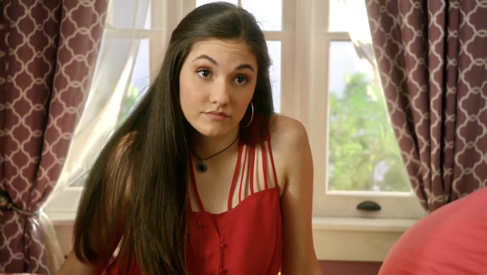
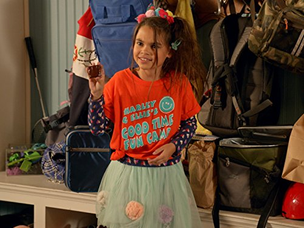

A irmã do meio
Esta é a minha série favorita
Esta série dava no canal da Disney Chanel e consiste na vida de família de 9 pessoas no qual relatam as partes boas e as más. Esta série ja é bastante antiga, sendo de 2016.
A personagem principal é a Harley Diaz, a irmã do meio, e por isso ás vezes sente muita dificuldade em conseguir destacar-se no meio de tantos irmãos. Ela é muito criativa, inteligente e engenhosa inventando soluções e aparelhos para a resolução de problemas do dia a dia.
Lista das minhas personagens favoritas
- Harley Diaz, a irmã do meio:
- Rachel Diaz a irmã mais velha:

- Daphne Diaz, a irmã mais nov

Exemplos de invenções que a Harley tenha criado
- Mesa transportadora – uma mesa com uma passadeira automática, onde toda a família consegue comer.
- Montanha-russa no quintal – uma montanha-russa construída com materiais como madeira, tubos e uma canoa.
- Dry-Through – uma máquina que seca as pessoas enquanto passam por ela.
Para mais informações sobre esta série, consulta este site!